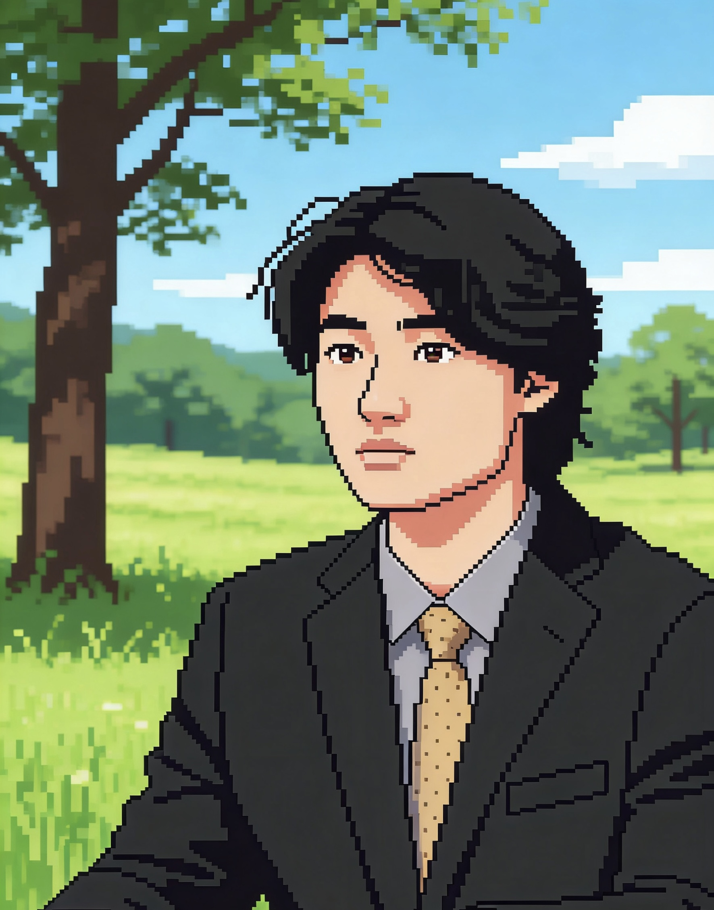

医护团队
资深医疗专家，24小时守护您的健康

窦技师
国家一级按摩理疗师
窦技师是国家一级按摩理疗师，从业二十余年，擅长中医推拿、经络调理及运动损伤康复。曾服务于国家体育集训队，为多位奥运冠军提供赛前理疗与赛后恢复服务。
独创技法："窦氏三维通络手法"，将传统穴位理论与现代肌筋膜松解技术相结合，对颈椎病、腰椎间盘突出、慢性劳损等疑难症状有显著疗效。
现任某三甲医院康复科特聘专家，坚持"手到病除，更需未病先防"的理疗理念。
资深医疗专家，24小时守护您的健康

国家一级按摩理疗师
窦技师是国家一级按摩理疗师，从业二十余年，擅长中医推拿、经络调理及运动损伤康复。曾服务于国家体育集训队，为多位奥运冠军提供赛前理疗与赛后恢复服务。
独创技法："窦氏三维通络手法"，将传统穴位理论与现代肌筋膜松解技术相结合，对颈椎病、腰椎间盘突出、慢性劳损等疑难症状有显著疗效。
现任某三甲医院康复科特聘专家，坚持"手到病除，更需未病先防"的理疗理念。